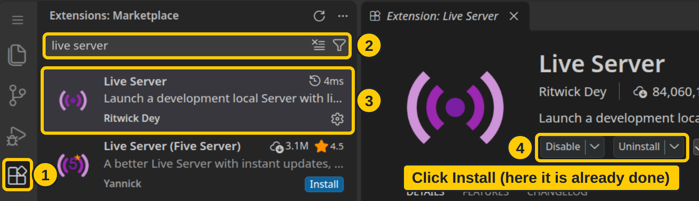
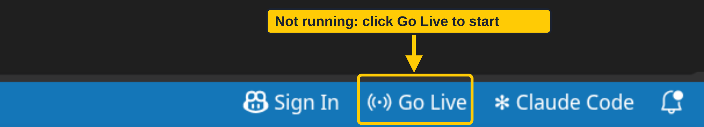
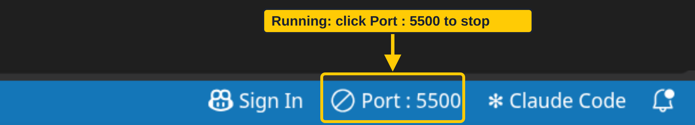

We build a Trainer profile page, one short step at a time.
"What is on this page?"
Headings, text, images, links, forms. A markup language, not a programming language.
"What should it look like?"
Colours, fonts, spacing, layout, responsiveness.
| N | types the next short chunk of code |
| A | shows the live page next to the code (A again hides it) |
| ↗ | opens the live page in its own window |
Type along in VS Code: index.html and styles.css.



| Start | open the folder, then click Go Live |
| See | the browser opens 127.0.0.1:5500/index.html |
| Change | save (Ctrl+S): the page reloads itself |
| Stop | click Port : 5500 in the same spot |
Bottom right of VS Code: Go Live starts it, Port : 5500 stops it.
| Tag | Job |
|---|---|
<!DOCTYPE html> | use modern standards |
<html> | the root: wraps it all |
<head> | metadata: not drawn |
<body> | everything you see |
| In the head | Example | Job |
|---|---|---|
<title> | <title>My Trainer Profile</title> | the browser tab |
<meta> | <meta charset="UTF-8"> | letters like é |
<meta name="viewport" …> | fits phones | |
<meta name="description" content="…"> | search results (SEO) | |
<link> | <link rel="stylesheet" href="styles.css"> | the CSS file |
<link rel="icon" href="icon.png"> | the tab icon | |
<style> | <style> h1 { … } </style> | CSS in the page |
<script> | <script src="script.js" defer></script> | JavaScript |
The head is for the browser. Only the body is drawn.
| Piece | Here | Job |
|---|---|---|
| Start tag | <a …> | opens the element |
| Attribute | href="#team" | extra information: name="value" |
| Content | Team | what is shown |
| End tag | </a> | closes it (note the /) |
Void elements like <img> and <br> have no content and no end tag. The slash in <img /> is ignored.
| Tag | Means | On our page |
|---|---|---|
<header> | the top: title, logo, menu | "Trainer Profile" + links |
<nav> | the menu | About · Team · Contact |
<main> | the main content (one per page) | the three cards |
<section> | one topic, with a heading | About me, My team, Battle request |
<article> / <aside> | stands alone / side note | Latest battle / the type tip |
<footer> | the bottom | "Made with HTML and CSS" |
Improves accessibility, SEO, maintainability and team communication.
| Tag | Use it for |
|---|---|
<h1> → <h6> | the hierarchy of the page |
<p> | a block of text |
<br> | a line break, same paragraph |
<div> | a generic block box |
<span> | a generic inline box |
<strong> | strong importance |
<em> | emphasis |
| Tag | Use it for |
|---|---|
<a href="…"> | a hyperlink |
<img src="…" alt="…"> | alt is critical for accessibility |
<ul> | a list, order doesn't matter |
<ol> | a list, order matters |
<dl> <dt> <dd> | a definition list: term, meaning |
<table> | data, never for layout |
Pick a tag for what it means, not for how it looks.
| Tag | The user… |
|---|---|
<input type="text"> | types one line |
type="password" | types, sees dots |
type="radio" | picks one of a group |
type="checkbox" | ticks yes or no |
<select> | picks from a dropdown |
<textarea> | types many lines |
<button> | sends it |
| On | Attribute | Means |
|---|---|---|
| form | action | where it goes |
| form | method | how: GET or POST |
| field | name | the key in the data |
No name, no data: a field without a name is not sent.
Page: fixit.html · stuck 2 minutes? press Hint, then Show solution
| Way | Looks like | Use it? |
|---|---|---|
| Inline | <p style="…"> | Avoid: one element only |
| Internal | <style> in the head | Small demos: one page |
| External | <link href="styles.css"> | Yes: every page, scales, separation of concerns |
| Two rules set the same thing: who wins? | |
|---|---|
| 1 | !important (avoid it) |
| 2 | Inline: beats any selector |
| 3 | The more specific selector: #id > .class > element |
| 4 | A tie: the one later in the page |
On a usual page (<link> first, then <style>), same selector: Inline wins, then Internal, then External
Then order matters: swap <link> and <style> and External beats Internal
On a tie, the later rule wins, wherever it lives.
| Way | Looks like | Good for | |
|---|---|---|---|
| Name | rebeccapurple | quick tests: about 140 names | |
| Hex | #663399 | the usual one: designers hand you these | |
| Short hex | #639 | each digit doubled: 66 33 99 | |
| RGB | rgb(102, 51, 153) | red, green, blue from 0 to 255 | |
| HSL | hsl(270, 50%, 40%) | hue, saturation, lightness: easy to make lighter | |
| See-through | rgb(102, 51, 153, 0.5) | a 4th value: 0 is invisible, 1 is solid | |
| See-through hex | #66339980 | two more digits: 00 to ff |
Same colour, same result. Pick hex, and be consistent.
DevTools → hover an element → you see these four layers.
| Tool | Example | Why it flexes |
|---|---|---|
| px | 16px | it doesn't: fixed size |
| rem | 2.5rem | relative: follows the browser's text size |
| % | 90% | relative: follows the parent box |
| Flexible layout | display: flex | children share the space |
| Media query | @media (max-width: 600px) | different rules on small screens |
Mobile, tablet, desktop: one HTML file, and the CSS adapts.
One missing tag can cause many errors. Start at the top.
Semantic tags · accessible markup: alt on every image, a label for every input · check it at validator.w3.org
External file · no inline styles · class names that say the role (card, not yellow-box) · styles modular and readable
CSS Playground (class site): 35 properties to try · Code Explorer (class site): the page after every feature, click any line for its story · MDN: the reference for every tag and property · Standards: HTML is a WHATWG living standard, CSS is from the W3C
HTML defines what exists. CSS defines how it looks.
Top to bottom: they get harder as you go. Links are on the class site.